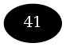
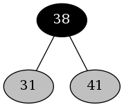
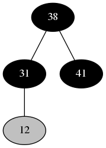
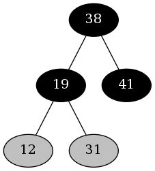
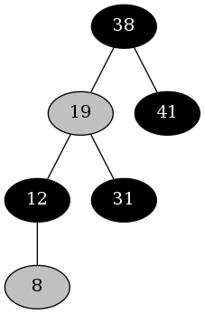
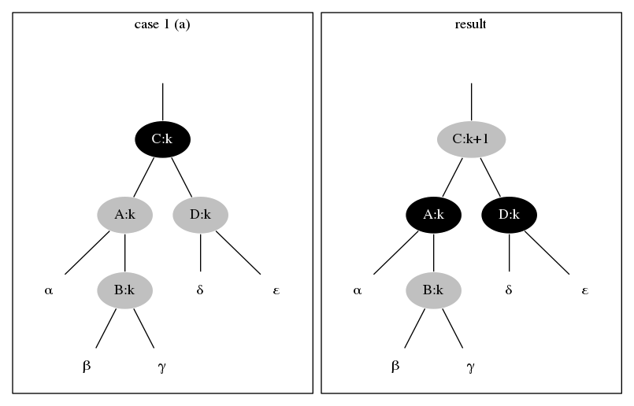
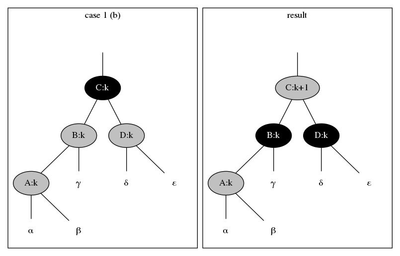
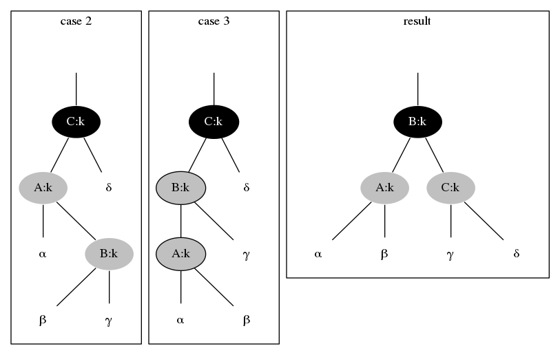

Chapter 13.3
13.3
13.3-1
If we set the newly inserted node \(z\) to black, then property 5 might be violated, and it's more difficult to fix property 5 than property 4.
13.3-2
Insert \(41\).

Insert \(38\).

Insert \(31\).

Insert \(12\).

Insert \(19\).

Insert \(8\).

13.3-3
For case 1.


For case 2 & 3.

13.3-4
If we set \(T.nil.color\) to RED, then the color of \(T.root\) must have been
set to RED too, this is impossible because we would only set the color of one
node to RED in an iteration, and then move up two levels in the tree or end
the loop. Thus RB-INSERT-FIXUP never sets \(T.nil.color\) to RED.
13.3-5
Note that we would only color the nodes BLACK in RB-INSERT-FIXUP, in the
RB-INSERT-FIXUP procedure, if the while loop never iterates, then we only
color \(T.root\) BLACK, but we have \(n > 1\), thus the new node \(z\) is not
colored BLACK; else the while loop iterates, for each iteration, if it goes
case 1 in Figure 13.5, after the iteration the node on the bottom is RED, and
if it goes case 2 or case 3 in Figure 13.6, after the iteration the two nodes
on the bottom is RED, when the while loop finished, we color \(T.root\)
BLACK, but the bottom red nodes after the iterations will not be colored
BLACK. Hence if \(n > 1\), the tree has at least one red node.
13.3-6
We could use a stack to store the nodes on the simple path down to \(z\), and pop the nodes out if we need to get the ancestor nodes of \(z\), the modified procedures are as below.
RB-INSERT(T, z)
y = T.nil
x = T.root
let S be an empty stack
PUSH(S, y)
while x != T.nil
y = x
PUSH(S, y)
if z.key < x.key
x = x.left
else x = x.right
if y == T.nil
T.root = z
elseif z.key < y.key
y.left = z
else y.right = z
z.left = T.nil
z.right = T.nil
z.color = RED
RB-INSERT-FIXUP(T, z, S)
RB-INSERT-FIXUP(T, z, S)
zp = POP(S)
while zp.color == RED
zpp = POP(S)
if zp == zpp.left
y = zpp.right
if y.color == RED
zp.color = BLACK
y.color = BLACK
zpp.color = RED
z = zpp
zp = POP(S)
else if z == zp.right
z = zp
LEFT-ROTATE(T, z, zp)
zp.color = BLACK
zpp.color = RED
zppp = POP(S)
RIGHT-ROTATE(T, zpp, zppp)
else (same as then clause with "right" and "left" exchanged)
T.root.color = BLACK
LEFT-ROTATE(T, x, xp)
y = x.right
x.right = y.left
if xp == T.nil
T.root = y
elseif x == xp.left
xp.left = y
else xp.right = y
y.left = x
RIGHT-ROTATE(T, y, yp)
x = y.left
y.left = x.right
if yp == T.nil
T.root = x
elseif y == yp.left
yp.left = x
else yp.right = x
x.right = y